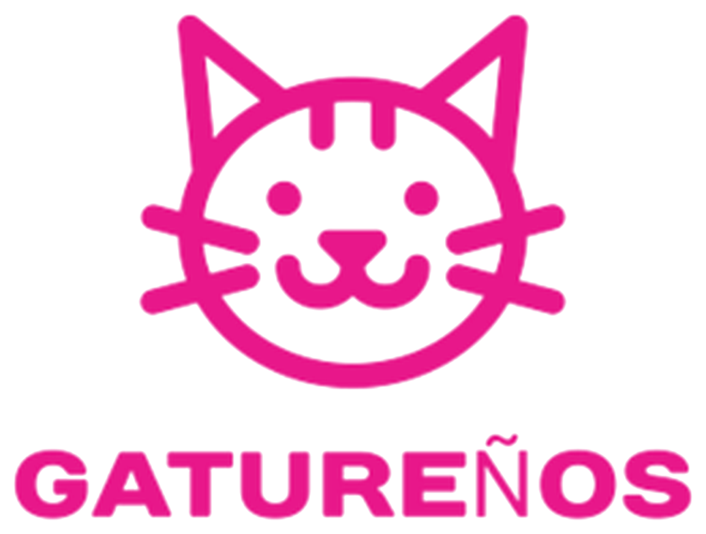
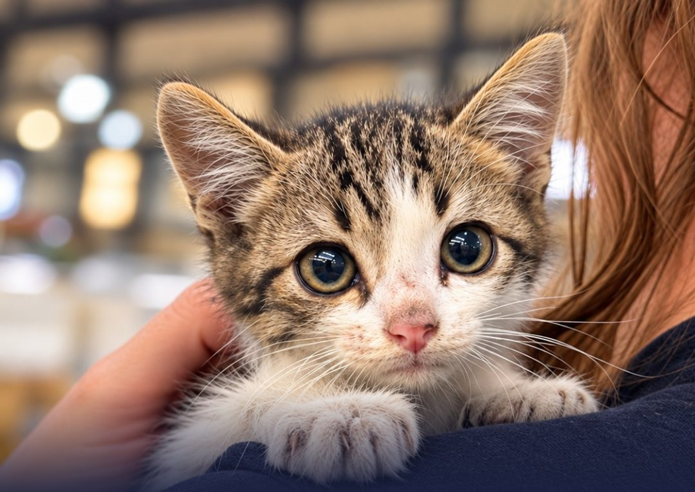

CER ruralSomos una asociación especializada en CER intensivo en la España rural: capturamos, esterilizamos y devolvemos cada gato a su colonia, con actuaciones cortas en pueblos donde, a veces, hay más gatos que personas.
Apoya el #Reto250¿Eres un ayuntamiento?
Cada gato vuelve a su colonia con la oreja marcada: la señal visible de que ya está protegido.
Esterilizamos gatos de colonias en la Sierra del Segura antes del 31 de diciembre. Primera ruta CER: del 26 al 30 de octubre.
85 € esterilizan a una gata. 65 €, a un gato. Cualquier cantidad suma.
Dona en migranodearena.org · #Reto250
Vamos avanzando con las marcas: ya llevamos 250 € recaudados.
Anímate, ¡nos falta tu ayuda!
Recuento semanal · actualizado el 18 de octubre de 2026.
Controlamos las colonias con el método CER y criterio veterinario.
Voluntariado local y jaulas trampa. Conocemos la colonia y a quien la cuida.
Con unidad móvil o con un veterinario de clínica local.
Cada gato vuelve a su colonia con la señal de que ya está hecho.
La sede de Gatureños está en Letur, pero colaboramos con todos los pueblos que nos solicitan ayuda.
Te ayudamos a organizar un CER intensivo. Tenemos nuestra propia aplicación para gestionar colonias felinas. Aunque no estés en la Sierra del Segura, ponte en contacto con nosotros.
Formación para el voluntariado que cuida las colonias.
Redacción del proyecto CER de tu municipio.
Protocolos de actuación con criterio veterinario.
Organización de grupos y de quienes los coordinan.
Calendario de actuaciones para controlar las colonias de tu municipio todo el año.
Ayuda para buscar y justificar subvenciones.
Escríbenos a info@gaturenos.org
Hablemos de tu municipio